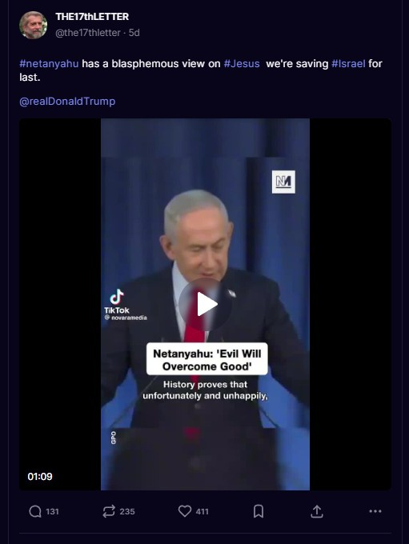
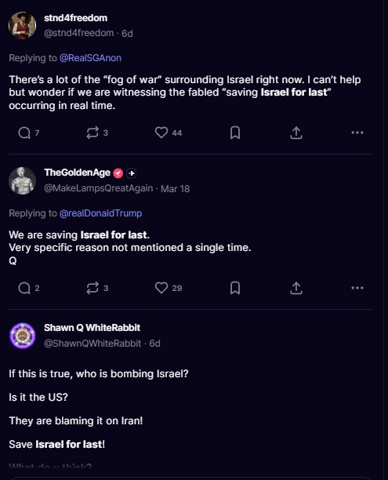
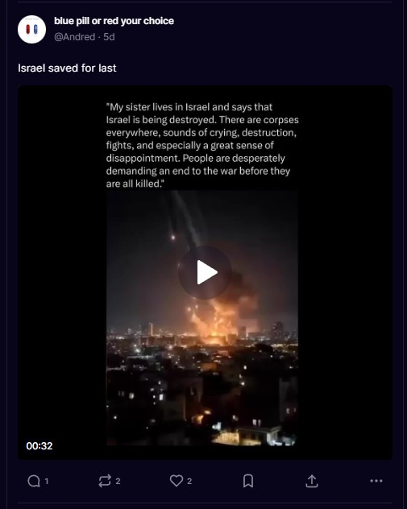
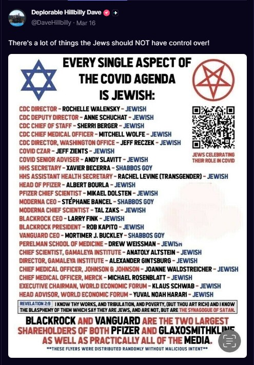
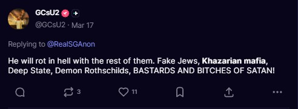
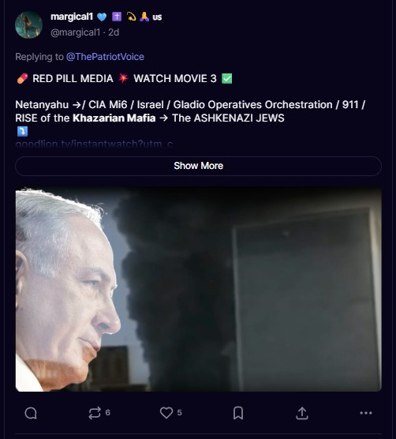
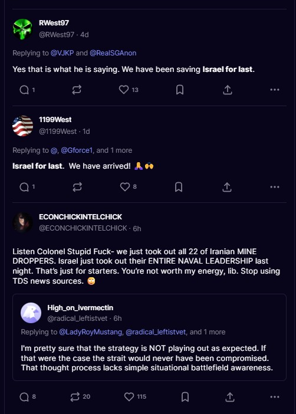

This Is Not Political. This Is Hate.
This chapter is different from the others on this site. The previous chapters debunk specific theories: devolution, law of war, sovereign citizen, Q. This chapter addresses something darker: the antisemitic hatred that runs underneath all of them.
If you've spent any time on X, Facebook, Truth Social, Telegram, or Rumble in the past two years, you've seen it. Posts about "the globalists." Memes about "the banking elite." Comments about "who really controls everything." Videos about "the Rothschilds" and "the New World Order." Threads about "Zionist control" of the government, the media, Hollywood, and the elections.
This isn't new. This is the oldest form of scapegoating in Western civilization, and it's being recycled through modern conspiracy theories to radicalize Americans who may not even realize what they're consuming.
The Playbook Is Centuries Old
Every anti-semitic conspiracy theory circulating on social media today is a recycled version of something that has been used to justify persecution and genocide for centuries:
Coded Language
One of the most dangerous aspects of modern anti-semitism is how it hides behind coded language. Most people sharing these posts don't even realize they're spreading anti-semitic content because the language has been sanitized:
| What They Say | What It Actually Means | Historical Origin |
|---|---|---|
| "The globalists" | Jews | Protocols of Zion (1903) |
| "The banking elite" / "central bankers" | Jewish bankers (Rothschild conspiracy) | Medieval Europe |
| "The cabal" | Secret Jewish conspiracy | Literally from Kabbalah, Jewish mysticism |
| "New World Order" | Jewish world domination | Anti-semitic pamphlets, early 1900s |
| "They control everything" | Jews control the world | Every anti-semitic movement in history |
| "Hollywood elites" | Jews in entertainment | Henry Ford's "The International Jew" (1920s) |
| Triple parentheses (((name))) | Identifying someone as Jewish | Neo-Nazi internet culture, 2016 |
Agenda 2030, the Great Reset, and the "New World Order"
Agenda 2030 is a plan agreed to by United Nations member states in 2015. It includes 17 goals for sustainable development: reduce inequality, end hunger, ensure access to clean energy, protect the environment. These are publicly available documents that anyone can read. There is nothing secret about them.
The conspiracy industry turned Agenda 2030 into something else entirely. In their version, it is a blueprint for a "New World Order," a one-world government run by shadowy elites who want to strip away national sovereignty, abolish private property, and control the global population. The same framework was applied to the World Economic Forum's "Great Reset" initiative, which became a byword for global conspiracy after Klaus Schwab's 2020 proposal for post-pandemic economic reform.
Here is where the antisemitism enters. The "New World Order" conspiracy theory has been antisemitic since its inception. The "globalist elites" at the center of the narrative are consistently identified as Jewish: George Soros, the Rothschild family, and other prominent Jewish figures. In white supremacist communities, researchers at the Institute for Strategic Dialogue have observed users referencing Klaus Schwab and the WEF with triple parentheses, (((Schwab))) and (((WEF))), which is an established antisemitic code indicating Jewish identity. Some extremist groups have dropped the pretense entirely and refer to the New World Order as the "Jew World Order" or "JWO."
The pipeline works like this. A person hears about Agenda 2030 and is told it means world government. They search for more information and find content about the "Great Reset." That content mentions "globalist elites." They search "globalist elites" and find content about Soros and the Rothschilds. They search Soros and Rothschilds and find Q drops, conspiracy videos, and content that traces directly back to the Protocols of the Elders of Zion, the same 1903 Russian forgery discussed earlier in this chapter. The person started by reading about UN sustainability goals and ended up consuming century-old antisemitic propaganda repackaged for a digital audience.
This matters because Agenda 2030 conspiracy theories are not fringe. They circulate on Truth Social, X, Telegram, Rumble, and mainstream conservative media. They appear in the content of nearly every conspiracy figure discussed on this site. They are promoted by people who may not consciously intend to spread antisemitism but whose framework leads their audience directly to it. The "globalist" framework is a conveyor belt, and it delivers people to the same destination every time.
How Q Built the Framework
The ADL's research is unequivocal: Q follows the basic blueprint of anti-semitic conspiracy theory. Here's how:
| Classic Anti-Semitic Trope | Q's Version |
|---|---|
| A secret group of Jews controls the world | "The Deep State cabal" controls everything behind the scenes |
| Blood libel: Jews kidnap and murder children | "Adrenochrome harvesting" from trafficked children by elites |
| Jews control the banks and global finance | "The Rothschilds" and "central banking families" run the economy |
| Jews control the media | "The mainstream media is controlled by a single criminal conspiracy" |
| Jews control Hollywood | "Hollywood elites" are part of the pedophile ring |
| The Protocols of Zion: secret meetings to plot world domination | "The Great Reset" / "New World Order" / "World Economic Forum" as a front for global control |
| Jews manipulate elections | "The stolen election" was orchestrated by unseen global forces |
The Q movement didn't invent these narratives. It repackaged them with American patriotic branding. When you hear "the globalists are coming for your freedom," that is a 21st-century version of "the Jews are plotting against us." The names change. The structure of the conspiracy doesn't.
The Antisemitism Was Built Into Q From Day One
This is not a case of Q's followers independently discovering antisemitism. The Q drops themselves contain the antisemitic framework. It was baked into the narrative from the beginning.
Q Drop #916 (March 10, 2018)
"We are saving ISRAEL for last. Very specific reason not mentioned a single time."
This single drop launched years of antisemitic speculation in the Q community. By promising that Israel was being "saved for last" without explanation, Q gave followers permission to fill in the blank with whatever antisemitic theory they preferred. It became one of the most cited drops in the movement.
Q Drop #133 (November 11, 2017)
"ROTHSCHILD (6++) - $2 Trillion+"
Q placed the Rothschild family at the top of a supposed global control hierarchy. The "Rothschild banking conspiracy" is one of the oldest and most widely documented antisemitic tropes in history, dating to the 19th century. Q presented it as fact to millions of followers without any evidence.
Q Drop #135 (November 11, 2017)
Q posted a list of central banks allegedly owned by the Rothschild family, spanning dozens of countries. This is a direct repetition of the "Jewish banking conspiracy" that has been used to justify persecution of Jewish people for centuries. The list itself has been debunked repeatedly by financial historians.
41 Drops Targeting George Soros
Q mentioned George Soros in 41 separate drops. Let us be absolutely clear about something: George Soros is not a good man. He has used his billions to fund radical district attorney campaigns that have destroyed public safety in American cities. He has bankrolled open border initiatives. He has toppled governments through currency manipulation, most infamously breaking the Bank of England in 1992. In a 60 Minutes interview, he described his experience during World War II, when as a teenager in Nazi-occupied Hungary he accompanied a man confiscating property from Jewish families, as "the happiest year of my life" and said he felt "no guilt." He has spent decades funding organizations designed to reshape nations according to his vision regardless of what their citizens want. There is no shortage of factual, documented, verifiable reasons to condemn George Soros.
But here is the critical distinction this chapter makes: Q did not criticize Soros for any of those documented actions. Q used Soros as a prop in the centuries-old antisemitic trope of the "Jewish financier" secretly controlling world events from the shadows. Q Drop #133 placed Soros in the same hierarchy as the Rothschilds, with an estimated "$1 Trillion+" in influence. The problem is not criticizing Soros. The problem is using Soros to validate a framework that says Jewish people secretly control the world. That framework has been used to justify persecution and genocide for centuries, and Q fed it directly to millions of people who did not recognize what they were consuming. You can despise everything Soros has done, and you should, without buying into the antisemitic conspiracy theory that he is part of a secret Jewish cabal. One is based on facts. The other is based on the Protocols of the Elders of Zion.
Q Drop #2337 (October 4, 2018)
"Israeli intelligence, stand down."
Q claimed to be issuing orders to Israeli intelligence (Mossad), portraying Israel as both an adversary and a subordinate to Q's supposed operation. This framing reinforced the dual loyalty trope, one of the most harmful antisemitic canards, which accuses Jewish people and Israel of secretly working against their own countries.
The Transformation Pipeline
This is how it works. A person starts by questioning the 2020 election. They discover devolution theory or the Law of War theory. They join patriot communities on Truth Social or Telegram. The algorithms and group dynamics push increasingly extreme content into their feed. Within weeks or months, they have gone from "I support Trump" to "the Jews control everything." The conspiracy framework they were given in Chapters 4, 5, and 9 of this site provides the on-ramp. The antisemitic content provides the destination.
The grifters covered in earlier chapters may not all be explicitly antisemitic themselves, but the communities they built and the frameworks they promoted serve as a conveyor belt toward antisemitic radicalization. When you teach people that a shadowy cabal controls the government, the media, and the banking system, you are repeating a narrative structure that has been used to target Jewish people for over 500 years. Whether the grifter intends it or not, the result is the same.
The Evidence: From Q Drops to Your Feed
Q Drop #916 was posted on March 10, 2018. Eight years later, it is still being quoted word for word across Truth Social, treated not as the vague post of an anonymous 8chan user, but as prophecy. The following screenshots show what this looks like in practice.



Q Drop #916 from 2018 is still being cited verbatim on Truth Social in 2026. It has become a rallying cry. When real-world violence occurs against Israel, these accounts celebrate it as fulfillment of Q prophecy. People are cheering the deaths of civilians because an anonymous 8chan poster told them Israel was "saved for last."
To document this problem, we searched Truth Social using simple terms that any user could search. What we found is not hidden in dark corners of the internet. It is on a mainstream social media platform, posted openly, with likes and reshares from accounts that identify as patriots.
Search: "Jews Control"

This is a meme listing U.S. government officials by name with "JEWISH" next to each one, under the heading "EVERY SINGLE ASPECT OF THE COVID AGENDA IS JEWISH." It includes a Star of David paired with a pentagram. This is identical in structure to Nazi propaganda from the 1930s, which listed Jewish professionals in government, media, and banking to argue that Jews secretly controlled society. This post received 14 likes and 9 reshares on a mainstream social media platform in 2026. The account that posted it has a verified badge and uses patriotic imagery in its profile.
Search: "Khazarian Mafia"
The "Khazarian Mafia" is a modern repackaging of the medieval "Khazar myth," which falsely claims that Ashkenazi Jews are not real Jews but descendants of a Turkish people who converted to Judaism. It is a fabrication with no basis in genetic science or historical evidence.

A user replying to an SGAnon-affiliated account calls Jewish people "Fake Jews, Khazarian mafia, Deep State, Demon Rothschilds, BASTARDS AND BITCHES OF SATAN." This post received 11 likes and 3 reshares. The language combines Q movement terminology ("Deep State") with centuries-old antisemitic tropes ("Rothschilds," "fake Jews") and religious demonization. This is the pipeline in action: Q vocabulary serving as the gateway to explicit Jew-hatred.

A user replying to @ThePatriotVoice promotes "RED PILL MEDIA" and connects Netanyahu, the CIA, MI6, "Gladio Operatives," 9/11, and "The ASHKENAZI JEWS" in a single grand conspiracy narrative. This is the classic antisemitic framework: Jews are secretly behind every major world event, from intelligence operations to terrorist attacks. The post uses Q movement language ("red pill," "watch the movie") to frame Nazi-era conspiracy theories as patriotic truth-seeking. It received 5 likes and 6 reshares.
Search: "Zionist Cabal"
Posts referencing the "Rothschild Cabal" claimed it "formed the State of Israel and its Government" and referenced the "Zionist KM," combining Khazarian Mafia mythology with modern geopolitics. Another post ranted about "Zionist... CABAL... NEW WORLD ORDER... ANTI JESUS," framing anti-Jewish hatred as a Christian religious duty.
It Is Everywhere
What started in Q has now spread across every major social media platform. You don't need to follow Q accounts to encounter anti-semitic content. It shows up in your feed whether you're looking for it or not.
X (Twitter)
The ADL's 2024 report found X scored the lowest of all platforms in responding to reported anti-semitic hate speech. Since Elon Musk's acquisition, moderation of anti-semitic content has collapsed. Accounts openly promoting anti-Jewish conspiracy theories have been verified and amplified by the algorithm.
Facebook / Meta
Despite content policies, anti-semitic conspiracy theories spread through private groups, coded language ("juice" instead of "Jews," triple parentheses), and memes designed to evade automated detection. Groups dedicated to "exposing the globalists" routinely traffic in anti-semitic content.
Truth Social
With minimal content moderation, anti-semitic conspiracy theories circulate freely. Posts about "Zionist control" of the government and "Jewish banking families" are common. The patriotic framing makes users less likely to recognize the content as anti-semitic.
Telegram
The ADL documented that after Q went silent, the power vacuum on Telegram was filled by explicitly anti-semitic extremists. GhostEzra, one of the most-followed Q influencers, is an open neo-Nazi who praises Hitler. His followers numbered in the hundreds of thousands.
The Numbers
Those numbers aren't abstract. They represent real harassment, vandalism, and assaults against Jewish Americans. Synagogues vandalized. Jewish students harassed on campus. Threats made against Jewish community centers. This is the real-world consequence of conspiracy theories that treat Jewish people as the villains in a made-up narrative.
After October 7
After Hamas's attack on Israel on October 7, 2023, anti-semitic incidents in the United States exploded to record levels. But the anti-semitism didn't come from just one political direction. It came from everywhere:
- From the right: Conspiracy theories about Jews orchestrating global events, "Zionist control" of the U.S. government, and claims that Israel staged the attack.
- From the left: Anti-Zionism that crossed into anti-semitism, campus protests that targeted Jewish students regardless of their views on Israel, and rhetoric equating all Jews with the Israeli government's policies.
- From conspiracy communities: Claims that Israel was behind the New Orleans terror attack, the LA wildfires, and virtually every negative event, recycling the ancient trope that Jews are behind all catastrophes.
The conspiracy pipeline doesn't care about your political alignment. It feeds anyone who's looking for someone to blame.
Credible Voices Call It Out
Not everyone on these platforms is drinking the poison. Some voices with real expertise push back with facts, and the contrast is striking.

While accounts with names like "RWest97" and "1199West" parrot Q drops about "saving Israel for last," a USAF veteran with actual military intelligence experience responds with verifiable facts about the Iran strikes. This is the difference between someone who served in the National Military Command Center and someone who reads 8chan posts. One has operational knowledge. The others have conspiracy theories.
For the Rising Generation
If you are young and reading this, understand what you are being exposed to. The memes, the posts, the "red pill" videos, the influencers telling you to "do your own research" are not leading you toward truth. They are leading you toward the same hatred that has destroyed communities, torn apart nations, and killed millions of innocent people throughout history.
In the 1930s, the Nazi Party did not come to power by announcing it would murder six million Jewish people. It came to power by blaming Jewish people for Germany's economic problems. It came to power by claiming Jewish bankers controlled the economy. It came to power by claiming Jewish people controlled the media. It came to power by claiming a secret Jewish conspiracy was undermining the nation from within. Every single one of those claims is being repeated on social media right now, in 2026, on platforms you use every day.
The language has changed. "Jewish bankers" became "the Rothschilds." "Jewish conspiracy" became "the cabal." "Jewish media control" became "who really runs Hollywood." "Jewish disloyalty" became "Israel for last." But the target has not changed. The hatred has not changed. And the consequences, if left unchecked, will not change either.
| 1930s Nazi Propaganda | 2020s Social Media |
|---|---|
| "Jewish bankers control the economy" | "The Rothschilds control the central banks" |
| "Jews control the press" | "Who really owns the media?" |
| "International Jewish conspiracy" | "The globalist cabal" |
| "Jews are not real Germans" | "Khazarian Mafia, fake Jews" |
| "Jewish Bolshevism" | "Cultural Marxism / Soros funded" |
| "Protocols of the Elders of Zion" | "The Great Reset / NWO agenda" |
| "Jews stabbed Germany in the back" | "Israel did 9/11" |
You have access to more information than any generation in human history. Use it to learn what these narratives actually are and where they lead. Visit the United States Holocaust Memorial Museum. Read the history of the Protocols of the Elders of Zion, a forgery created by Russian secret police in 1903 that is still being cited on social media over 120 years later. Understand that the people sharing these memes may not know where the ideas originated, but the ideas themselves have a documented, traceable history that ends in genocide.
Being a patriot means defending the Constitution and the rights it guarantees to every American regardless of their religion, ethnicity, or background. The next generation has the power to break this cycle, but only if you can recognize it for what it is.
What the Constitution Says
The First Amendment protects free speech, including hateful speech. The government cannot and should not regulate what people say. But the First Amendment also doesn't protect you from the consequences of that speech, and it doesn't mean that hateful speech is true or valuable.
Here's what the Constitution actually established regarding religion:
"Congress shall make no law respecting an establishment of religion, or prohibiting the free exercise thereof." - First Amendment to the U.S. Constitution
The Founders explicitly protected religious freedom because they understood what happens when a government targets people based on their faith. They had seen it in Europe for centuries. The anti-semitic conspiracy theories circulating on American social media are exactly the kind of religious persecution the First Amendment was designed to prevent the government from engaging in, and they're exactly the kind of hatred that patriots should be standing against, not amplifying.
How to Recognize It
Not every criticism of power structures is anti-semitic. Not every concern about corruption is a conspiracy theory. Here's how to tell the difference:
What You Can Do
If you've shared content that uses these tropes without realizing it, that doesn't make you an anti-semite. It means you were targeted by a propaganda system designed to make this content seem normal. Here's what you can do:
- Check the language. If a post mentions "the globalists," "the cabal," "the banking families," or "who really controls things," ask yourself: is this naming specific people and policies, or is it using code words for an ethnic group?
- Look at the source. Who created this content? Do they have a history of anti-semitic posts? Follow the account's other content.
- Learn the history. Understanding that these narratives are centuries old makes it easier to recognize when they're being recycled in modern packaging.
- Don't share without checking. A meme that feels patriotic might be carrying a message you didn't intend to spread.
- Speak up. If you see anti-semitic content in your community, call it out. Silence is interpreted as agreement.
Sources & Further Reading
- ADL: QAnon's Antisemitism and What Comes Next
- ADL: QAnon Backgrounder
- ADL: Mis- and Disinformation Trends 2025
- CBS News: QAnon Power Vacuum Exploited by Antisemitic Extremists
- Southern Poverty Law Center: Hate Group Tracking
- U.S. Holocaust Memorial Museum: Antisemitism
- Just Security: Antisemitism and Threats to American Democracy